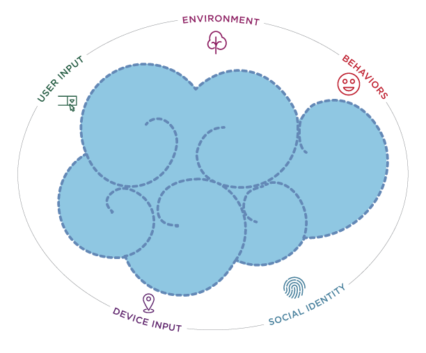
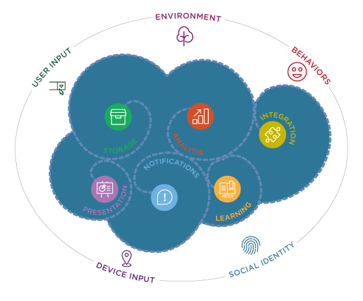
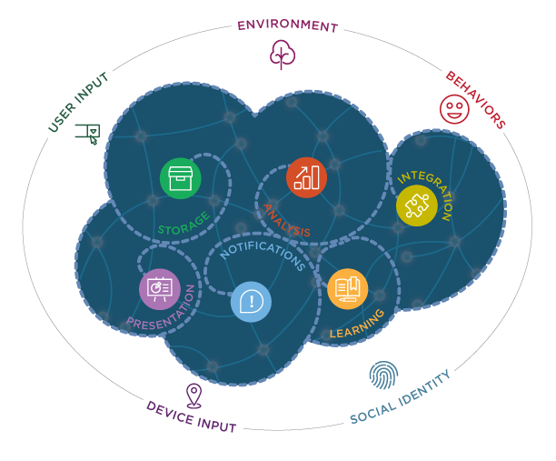

Your CRUDy Software Needs a New Brain
We have entered a new era of computing where everyone and everything is connected.
But this won’t automatically mean more people using your apps and doing business with you on more devices. In fact, it will mean the opposite if you don’t start thinking about your app in a different way: as the primary channel of customer engagement for your business, as opposed to a data entry terminal forcing your customers into entering and interacting with siloed data with no intelligence or connection.
The way companies are able to intelligently connect these silos to engage with their customers is rapidly emerging as a disruptive factor, challenging the establishment across all industries.
For example, Uber has changed the personal transportation industry by delivering an experience that deeply engages customers and drivers by connecting everything to everything: passengers to cars, passengers to passengers, ratings to business processes, passengers’ playlists to the car’s music app, and the list goes on.
In this document, we describe the principles of “Multi-Sensory Applications”, a new breed of applications that, much like the human brain, utilize all the inputs or “senses” available to gain a complete understanding of the context. By integrating and processing the input from all the senses, MSAs deliver a new kind of engagement-centric applications that is rapidly making traditional CRUD-centric applications obsolete and irrelevant.
Are you still building applications that have the keyboard as their only input and a database as their only data store? Multi-Sensory Applications use five primary inputs or “senses” to create a 360 degree view of the context, and then use that context to deliver the most relevant, engaging and connected experience.

Multi-Sensory Applications have a deep understanding of the user’s identity. This goes well beyond an application-specific identity represented by the credentials a user provides to log in. It represents the wholeness of a person across disparate identity services, different apps, different social networks, and different devices. Social logins can provide the basic input for the sense of identity, but applications with a highly developed sense of identity are also able to reconcile the user’s identity across different identity services, and often infer the user’s identity when it is not explicitly provided. With users’ permission, Multi-Sensory Applications are also aware of the user’s social graph and understand the person’s connections and networks as they pertain to the application’s domain. Applications with a developed sense of identity don’t limit this intelligence to users: they also understand the wholeness of any person they keep track of (contact, customer, etc).
Multi-Sensory Applications are aware of the user’s past behaviors, as well as past behaviors of people in the user’s networks, and past behaviors of the general population. This knowledge comes from the application’s own opt-in behavior tracking, as well as access to the user’s and other people’s behaviors tracked in other applications and on other connected devices.
Sensors are becoming small, cheap, and ubiquitous. Multi-Sensory Applications leverage hardware sensors on connected devices to capture Device Input (e.g. location, heart rate, movement, temperature, etc). These sensors might be integrated into the device the application is running on, or they might be on other connected devices (e.g. exercise trackers, iBeacons, smart glasses, etc). For example, with the user’s permission, MSAs can combine GPS, iBeacon, and WIFI technology to gain awareness of the user’s location, not only in absolute terms (longitude and latitude), but also relative to things of interest (e.g. 100 yards from a friend or a customer, 20 feet away from a product you are looking for in the electronics aisle, 5 minutes from the nearest coffee shop, etc).
Most applications still need to capture information directly from the user, but manual user input (through keyboard or voice) should only be used as a last resort. Multi-Sensory Applications always make sure the data can’t be passively measured through device sensors or inferred from already-available information sources. An MSA never asks anything it should already know.
The environment is the peripheral data and information that the application doesn’t directly capture, manage or control, but that can help it gain higher levels of awareness. For example, a modern application might need to notice and account for relevant Twitter conversations and the sentiment of these conversations.
Disconnected individual senses are incapable of delivering the intelligently connected experiences that users want. We all regularly have frustrating experiences that exemplify this. For example, my credit card company should be able to easily prevent fraud since I’ve installed their app and given it permission to always know where I am: “Of course I didn’t just buy gas in Omaha; the app knows I’m in Denver!”
In the pre-cloud era, applications and data were siloed. Firewalls and the lack of sharing and security protocols made it difficult to integrate inputs and data between systems. The cloud enables Multi-Sensory Applications to intelligently connect and transform information captured by the senses in order to deliver deeply engaging experiences. MSAs use six sensory transducers to manipulate and integrate data captured by the senses.

The five MSA senses capture continuous feeds of data. Device input and behavior tracking in particular can generate huge amounts of data. The Storage Transducer persists that information for later retrieval and analysis. But this can be thousands of times more data than traditional applications dealt with. Over 90% of the world’s data was generated over the last 2 years. If you are not seeing a similar growth ratio in your own systems, you may be missing out on some important information and competitive advantage. Capturing and storing continuous feeds of data is a “big data” problem that has required a new way to think about storage because traditional databases were not built for that paradigm. Different data stores are optimized for different types of data, and because MSAs capture different types of data, your architecture should include different data stores: Relational, NoSQL and Big Data systems.
Capturing large amounts of data is useless without a way to extract the essential meaning of the data. A key function of MSAs is to distill and make sense of the data available to the application. Traditionally, data analysis was performed by running synchronous or asynchronous business logic and queries on relational databases. But Big Data introduces a new level of complexity in data analysis. While storing huge amounts of data has become relatively mundane, extracting digestible and actionable information is a new challenge often referred to as “data science” - a discipline new to many organizations. Big Data systems provide data analysis primitives (map-reduce), and new breeds of languages, libraries and tools are emerging in the exploding data science field.
Data Analysis shouldn’t be limited to filtering, distilling and analyzing siloed data inputs. An essential function of MSAs is to combine multiple sensory inputs to gain a complete understanding of the application’s context. For example, in a specific application, a key factor of users’ behaviors may be their location. If you don’t integrate location with the users’ behavior analysis, you may fail to understand the most important patterns in their behavior, and be unable to present them with the most relevant options or make the best decisions when they are in a specific location.
The user interface is often the MSA’s primary means of communication. It is the way the MSA presents its understanding of the data and the context to the user. Effective user interfaces are personalized, contextual (less is more), actionable, composable, and tailored to the device form factor. Rich and interactive visualization is essential to understand data. Smartphones are the most important delivery platform today, but emerging devices such as watches and augmented reality displays will provide new mediums for presentation and interaction.
MSAs communicate with the user using different channels. They don’t wait for the user to start a client application and interact with the user interface. They are always on: even if the client is not running, the MSA keeps working, capturing data and analyzing the context. When the context warrants it, the Notification Transducer is responsible for proactively alerting the user of time-sensitive conditions, location-sensitive conditions, error conditions, etc. While SMS, email, and mobile notifications are the most common notification mechanisms, the Internet of Things is rapidly opening up new options like turning on a light in a smarthome.
MSAs are capable of anticipating the user’s actions and making “do not make me think” decisions based on Machine Learning and Workflows. Machine Learning adapts and learns over time so that it can make automated decisions and predict what the user will do next. Workflows enable business processes to be automatically applied to incoming senses.
Bringing it all together, an MSA is the nervous system that composes Senses and Transducers to create intelligence across the typical data silos. These interconnected parts create an engagement system across mobile apps, web apps, Internet of Things devices, back-office management apps, and many other interfaces.

Here is an example of an engaging experience that a Multi-Sensory Application could deliver:
By combining your current location with patterns learned from your past orders and wait time data at nearby locations, your coffee shop loyalty app anticipates and prepares an order on your behalf at the location with the shortest wait time, and submits it for your approval on your smartwatch or other available device. When you arrive at the location, your order is ready for pick-up and your payment is automatically processed. Another notification allows you to rate your barista which allows your coffee shop to make informed training decisions, and make your future experiences even greater. Loyalty points are automatically added to your account, which gives you privileges like automatic playing of your music when you enter the store. Your loyalty points are tabulated with those of your social connections allowing you to compete for the title of “Most Addicted” coffee drinker.
This type of experience goes way beyond what today’s typical CRUD applications can deliver. Instead of focusing on individual data silos, it focuses on engagement, connection, and intelligence. This example brings together many different Senses and Transducers to form an MSA that delights customers and helps businesses better serve them.
The MSA approach also fits well with the emerging microservices movement that breaks systems into small, composable, services that can be weaved together in different configurations. For instance, a learning microservice can consume data from a storage microservice, providing predictive information to a mobile app and recommendations to a periodic email service. Breaking each function of an MSA’s nervous system into a microservice enables it to be easily used by other parts of the system and moves deployment, scaling, and management closer in proximity to the team that owns the service.
In the new era of computing where everyone and everything is connected, applications are no longer terminals for data entry: they are the primary channel of customer engagement for your business. Multi-Sensory Applications integrate and process multiple inputs across multiple devices to deliver contextual, connected and viral experiences. Multi-Sensory Applications follow seven principles.
Systems that embrace these principles will deliver more engaging and pleasing experiences for users. They will also help businesses connect more closely with their customers and gain deeper insights into customers’ needs. Technologies like Cloud, IoT, Big Data, and Machine Learning are helping us to deliver Multi-Sensory Applications quickly and easily.
The businesses of the future are the ones that will move beyond CRUD and create deep engagement through Multi-Sensory Applications.